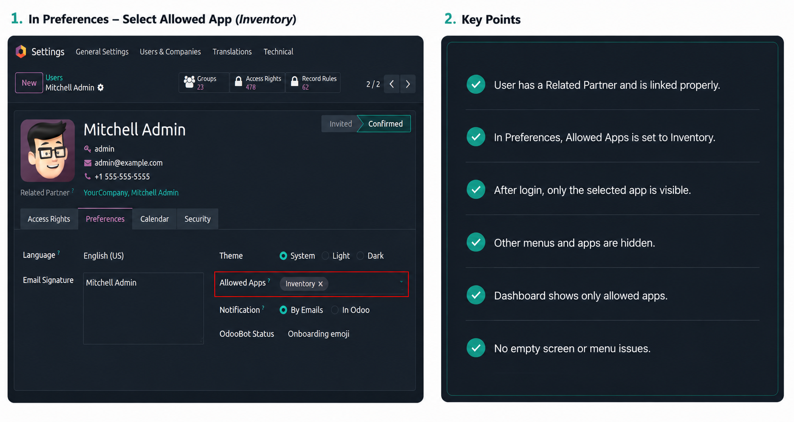
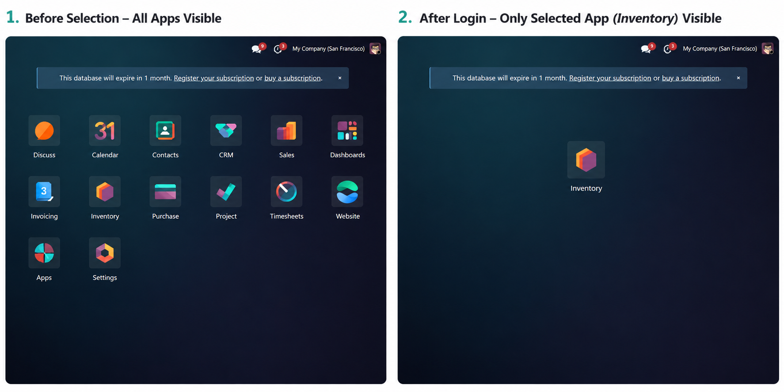

Manage application visibility per user without adding complex group configurations or extra setup steps.
01
A dedicated Allowed Apps field is added on each user record for simple menu access control.
02
Select only the root applications a user should see after logging in.
03
Changes take effect immediately after save because the menu cache is cleared automatically.
04
Leave the field empty to keep all apps visible, or select specific apps to limit access.
05
Reduce clutter for role-specific users by showing only the apps that matter to them.
06
Small, focused functionality with no extra configuration pages or added complexity.
Workflow
The setup is straightforward and stays inside the standard user form without extra navigation.

Users see a cleaner Odoo home screen when only the allowed applications remain visible after login.

Before restriction, the dashboard shows all available applications.
After setting Allowed Apps, only the selected application remains visible for that user.
This creates a simpler, role-focused workspace and reduces navigation mistakes.
Built for Odoo 19 administration and user access visibility workflows.
Odoo implementation, customization, migration, integration, and support services.
Contact: agentrooconsultings@gmail.com